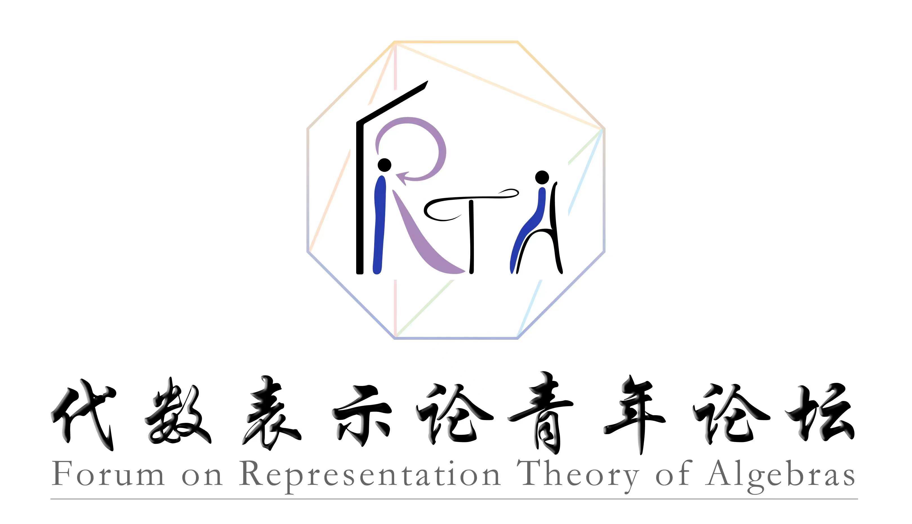

| May 24 | 汪正方 (Zhengfang Wang), 斯图加特大学 | |
| A complete derived invariant for graded gentle algebras | ||
|
Abstract: We first give an overview on the geometric invariants, introduced by Lekili--Polishchuk,
for smooth and finite dimensional graded gentle algebras. If two graded gentle algebras have the same invariants
then they are necessarily derived equivalent. It was conjectured that the converse also holds.
|
||
| May 10 | 覃帆 (Fan Qin), 上海交通大学 | |
| Triangular bases for strata of algebraic groups | ||
|
Abstract: Triangular bases are Kazhdan-Lusztig type bases for quantum cluster algebras. Examples include the dual canonical bases for the quantized coordinate rings of unipotent subgroups. In this talk, we show the existence of these bases for the quantized coordinate rings of the double Bruhat cells, generalizing the results from unipotent subgroups. It is worth noting that when the Cartan matrix is symmetric, their structure constants are positive and they have monoidal categorification after minor modification. |
||
| April 26 | 梁力 (Li Liang), 兰州交通大学 | |
| An informal introduction to (abelian) model structures | ||
|
Abstract: In this talk, we will give an informal introduction to (abelian) model structures. We will construct abelian model structures on representation categories. |
||
| April 12 | 涂君武 (Junwu Tu), 上海科技大学 | |
| Trivializing circle actions on the moduli spaces of curves | ||
|
Abstract: Koszul duality between algebras has been generalized by Ginzburg-Kapranov in their famous work on Koszul duality between operads. For example, we have a nice duality between Lie and Comm operads. In the 90’s, Getlzer obtained a beautiful generalization of this: a Koszul duality between Grav and Hyper-Comm operads. These operads are defined using moduli spaces of genus zero curves and the corresponding Deligne-Mumford compactifications. In this talk, we will discuss a higher genus version of this duality. The talk is based on a joint work in progress with Lino Amorim. |
||
| March 29 | 阮诗佺 (Shiquan Ruan), 厦门大学 | |
| Hall algebra approach to iquantum groups | ||
|
Abstract: The iquantum group is a generalization of quantum groups, which arises from the construction of quantum symmetric pairs by Letzter.
A striking breakthrough of the iquantum groups is the discovery of canonical basis by Bao-Wang. It has been found that most of the fundamental constructions of quantum groups admit generalizations in the setting of iquantum groups.
|
||
| March 15 | 邱宇 (Yu Qiu), 清华大学 | |
| Categorification of collapsing subsurfaces with quadratic differentials | ||
|
Abstract: We introduce a new class of triangulated categories, which are Verdier quotients between 3-Calabi-Yau categories from (decorated) marked surfaces, and show that its spaces of stability conditions can be identified with moduli spaces of framed quadratic differentials on Riemann surfaces with arbitrary order zeros and arbitrary higher order poles. This is a joint work with Anna Barbieri, Martin Möller and Jeonghoon So. |
